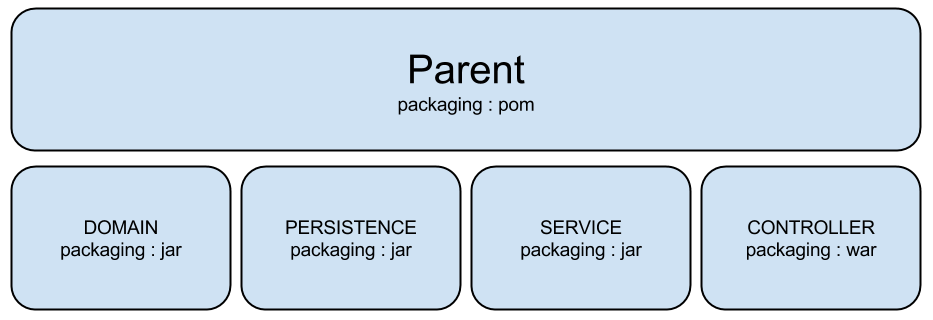

Architecture 1.0

Alexandre Nunesse | Christophe Deverre
EPF - 2014
Architecture 1.0

Maven
Introduction
Maven est un outil indispensable dans la gestion de gros projets, il s'appui sur Apache ANT en normalisant son utilisation.
Maven s'utilise avec un fichier pom.xml (Project Object Model).
Alternatives à Maven : ANT, Gradle ou Raven
Introduction
Maven peut rendre plusieurs services :
- Build et déploiement du projet
- Gestion des dépendances
- Test
- Versionning
- Génération de documentations
- Modularisation
- ...
Utilisation
Apache Maven : http://maven.apache.org/mvn -v
Maven home: /home/alexandre/Java_Dev/apache-maven-3.1.1
Java version: 1.7.0_51, vendor: Oracle Corporation
Java home: /opt/jdk1.7.0_51/jre
Default locale: en_US, platform encoding: UTF-8
Remarque : Maven doit être présent dans votre Path pour utiliser la commande mvn.
Structure de projet
main
java
resources
webapp
WEB-INF
web.xml
test
pom.xml
Construction du projet
Commandes principales:
- mvn compile : compile les sources
- mvn test : exécute les tests unitaires
- mvn install : déploie l'archive de l'application (war)
- mvn clean : nettoie le répertoire target
Modularisation du projet

Remarques
- Maven est un outil performant pour modulariser un projet
- Maven permet d'utiliser divers types de plugins pour réaliser des tâches complexes et fastidieuses
- La pluspart des IDE intègrent des outils pour gérer des projets Maven
- Il est possible de publier ses propres librairies pour les rendre accessibles depuis les repositories centraux
Repository

Project Object Model
Exemple
Notion de Scope
compile :
Sélectionné par défaut, la dépendance sont ajoutées au classpath du projet.provided :
La dépendance est fournie par un autre container comme le JDK ou le serveur d'application.runtime :
La dépendance n'est pas nécessaire à la compilation mais uniquement au runtime. Exemple : jstl.test :
La dépendace est requise uniquement pour les tests.system :
Equivalent à provided en fournissant soi-même le jar.import :
Utilisé pour une dépendance d'un module parent pour importer les dépendances d'un autre module.
LiveCoding
Intégration de Maven
Spring
Qu'est ce que J2E?
Un ensemble d'interfaces normalisants le fonctionnements d'un serveur d'application (JSR). Plusieurs implémentations existent sur des serveurs comme GlassFish ou Wildfly (pour JEE 7).
- Servlet/JSP/JSF/JSTL
- EJB
- JNDI
- JDBC
- JMS ...
- JPA
- JTA
JEE vs Spring
JEE peut être une solution lourde à implémenter, nous allons donc voir une alternative à JEE : Spring.
Spring
- Un conteneur lèger
- Le management du cycle de vie des objets
- L'injection de dépendances
Le contexte Spring
Spring s'appuie sur un contexte qui va contenir des objets instanciés par Spring.
Spring tout seul... C'est nul
Principaux modules de Spring
- Spring-Web
- Spring-Web-MVC
- Spring-Data-JPA
- Spring-Transaction
Spring web & Spring web MVC
Spring-Web fournit principalement une couche d'abstraction au-dessus du language Http (HttpRequestHandler) et un contexte supplémentaire pour la web application.
Spring-Web-MVC fournit une servlet de haut niveau permettant de manager les autres servlets : c'est la DispatcherServlet
LIVECODING
Intégration de Spring
Pour aller plus loin
Intégration de SpringData JPA
Architecture 2.0
Alexandre Nunesse | Christophe Deverre
EPF - 2014
Architecture 2.0
- Web Services & REST
- Authenticication
Utilisation des Web Services
Permet d'exposer directement des méthodes
- Clients Javascript
- Communication serveur/serveur
- Création d'API publique
REST
REpresentational State Transfer
REST est un modèle d'architecture qui s'appuie sur le protocole HTTP.
Il n'existe pas de norme de cette architecture mais seulement de bonnes pratiques et des concepts d'utilisation.
Architecture REST
Resource GET PUT POST DELETE : Collection User
| URL | GET | PUT | POST | DELETE |
|---|---|---|---|---|
| http://localhost/user | Récupére tous les éléments de la collection | Ajoute un user à la collection | Ajoute un user à la collection | Supprime la collection |
| http://localhost/user/{id} | Récupère un user par son id | Ajoute un user avec son id | Edite le user avec son id | Supprime un user par son id |
Serialization
La sérialisation est une méthode permettant de transformer un objet Java pour pouvoir le persister ou l'envoyer.
La désérialisation... Bah c'est l'inverse!
Jackson
Une librairie de serialiation/deserialization qu'on appelle un processor.
A la base Jackson s'appuie sur le format JSON mais il traite d'autres types de format (csv, xml...).
LIVECODING
Authentification
http://www.kaleidos.net/blog/295/stateless-authentication-with-api-rest/
Sateless
Session
LIVECODING
Merci de votre attention!
Des questions?
anunesse@excilys.com | cdeverre@excilys.com
eBusiness Information